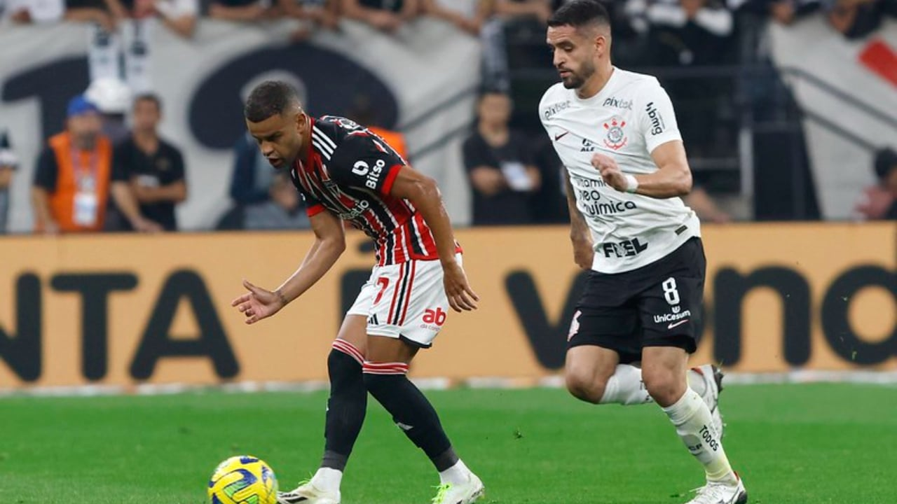

São Paulo
Chance de Majestoso na Sul-Americana começa a tirar sono de corintianos
Depois do baile que levaram no Morumbi, os alvinegros querem ver até o capeta pela frente, mas não o fortíssimo Tricolor de Dorival Júnior, agora vitaminado com o incrível Lucas e com o ótimo James Rodriguez. Bem, e pensando nos caminhos das duas equipes, a chance de termos o clássico paulistano na decisão da Sul-Americana é realmente bem grande. Acredito que o Timão já esteja nas semifinais, fase na qual deverá enfrentar o Fortaleza. Confronto difícil, mas não impossível. Enquanto isso, o São Paulo, que deve passar pela LDU, encarará muito provavelmente o Botafogo.